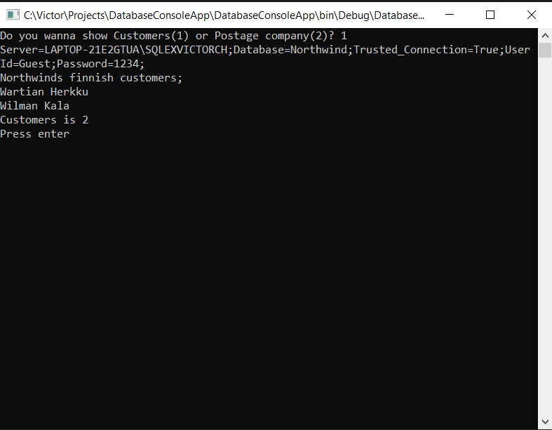
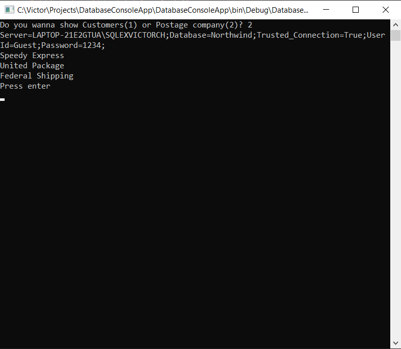
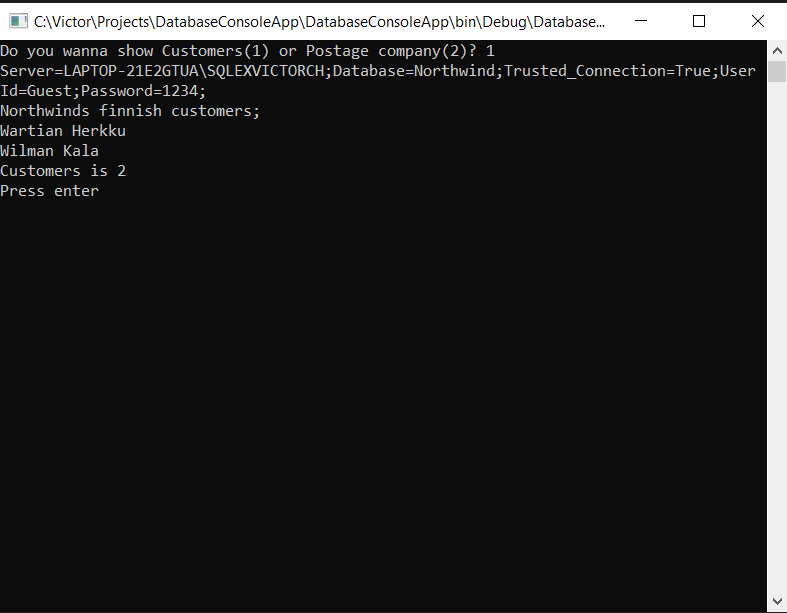
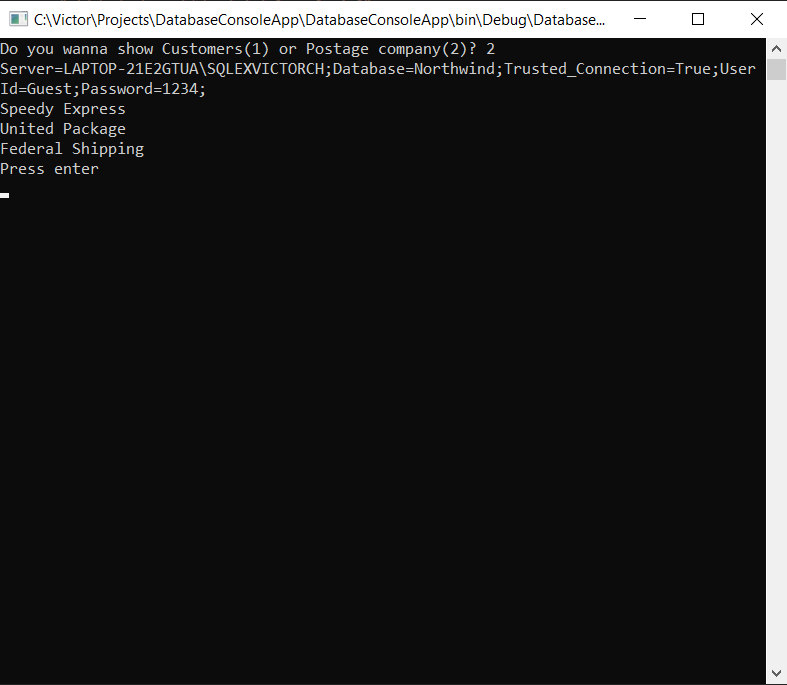

In this project main task was required to create a console program that makes contact with SQL database using c#. The console program allows the user with a choice between two options that should be displayed in the console window (Customers (1) or Delivery company (2)). I have established the SQL connection using SQL Server Instance string: (Server = myServerName \ myInstanceName; Database = myDataBase; User Id = myUsername; Password = myPassword;) then i using an if statement,so program understands the answer given by the user and issues it to the console a request window that the user makes. The photos above show what the user gets, with a certain choice. Also i created simple SQL database with primary key and foreign key. I will attach a link to the source code (Click me)
DatabaseConsoleApp
 


